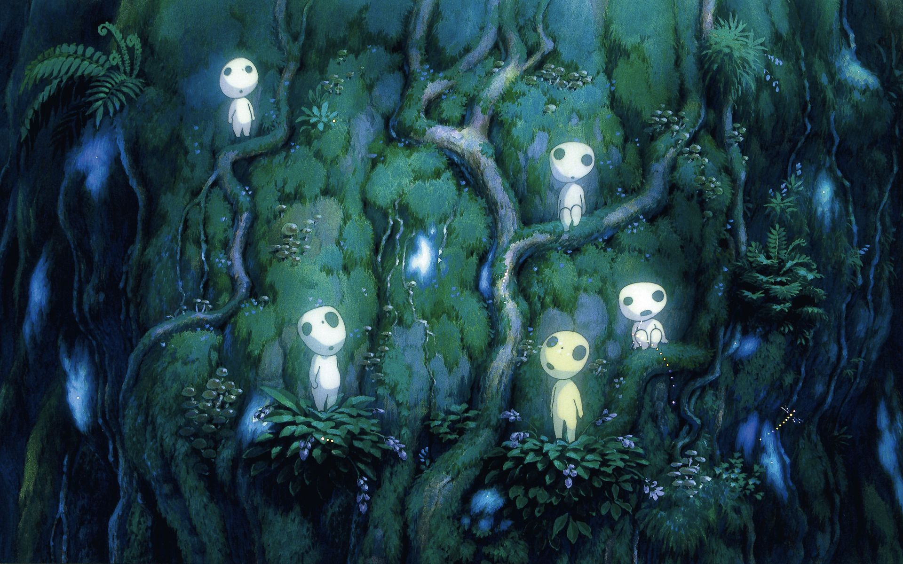

About Kodama
Kodama (木霊, 木魂 or 木魅) are spirits in Japanese folklore that inhabit trees. Sounds making a delayed echoing effect in mountains and valleys are sometimes attributed to this kind of spirit and may also be referred to as "kodama".
Kodama on a tree
Kodama's Characteristics
- White skin with black eyes
- Bustle about mountains at will
- Have a mysterious supernatural power
- The elderly pass down their knowledge
Kodama's Friends
Kodama's friends are the trees. They live with and off them. However, other creatures also live in the forest. Click on the links below to read more about them: